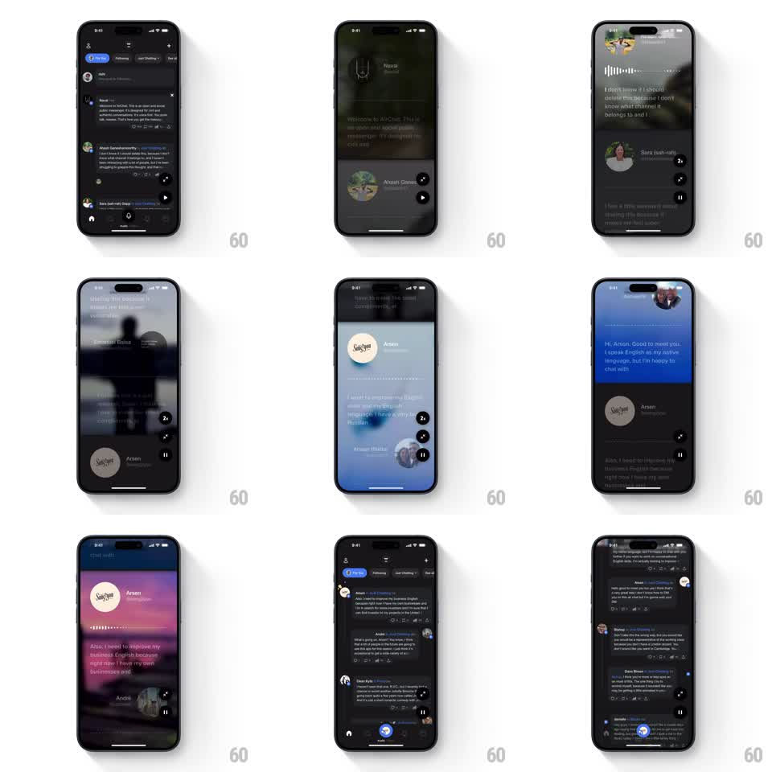

Media
Frame-by-frame

Rebuild this interaction 1:1: Airchat's immersive audio view - playing a voice post morphs the feed card into a full-screen player where the blurred background shifts color with the content, a waveform tracks progress, and the transcript auto-scrolls with the audio.

Rebuild this interaction 1:1: Airchat's immersive audio view - playing a voice post morphs the feed card into a full-screen player where the blurred background shifts color with the content, a waveform tracks progress, and the transcript auto-scrolls with the audio. ## Integration Integration: stack-agnostic spec - springs given as stiffness/damping, timed motions as duration + curve; map every value to your framework and animation library of choice. ## Scene Dark feed of voice posts (avatar, name, transcript preview, play button). Player: full-screen takeover - heavily blurred backdrop photo whose tint shifts (blue to purple to teal) as the post plays, a thin waveform progress line near the top, the transcript auto-scrolling with the current line emphasized, the speaker's avatar and name pinned, and a control column: 2x speed toggle, expand, pause. ## Motion spec Pattern: feed-to-player morph with reactive backdrop. - The tapped card expands to full screen (bounds animation, 350ms, ease-in-out); the transcript text carries over as a shared element. - The backdrop samples the speaker's imagery and crossfades between color tints as playback progresses (1s color transitions, heavily blurred so only hue reads). - The waveform fills left to right in sync with playback position; the fill is a hard edge, not a gradient. - The transcript scrolls to keep the current sentence centered (smooth scroll, 300ms easing per line change); the active line is full opacity, others dimmed to ~50%. - Controls fade in after the morph lands (200ms); pause collapses the player back into the feed card (reverse 300ms). ## Calibration - Text legibility over the shifting backdrop is the constraint: backdrop blur and a dark scrim must keep contrast constant as hues change. - The morph, not a push, is the identity of this flow - never cut to a separate player screen. ## Reduced motion Player opens with a 200ms crossfade; backdrop holds one tint; transcript jumps without smooth scroll. ## Don't miss - The 2x toggle lives in the player, and playback position is preserved across the morph in both directions. - The waveform is a real progress control - it reflects position, not a decorative loop.